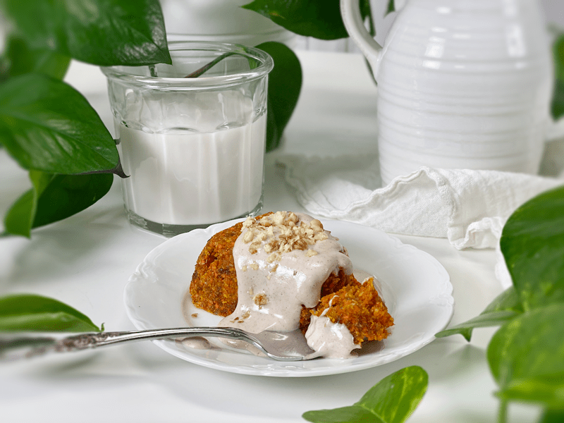
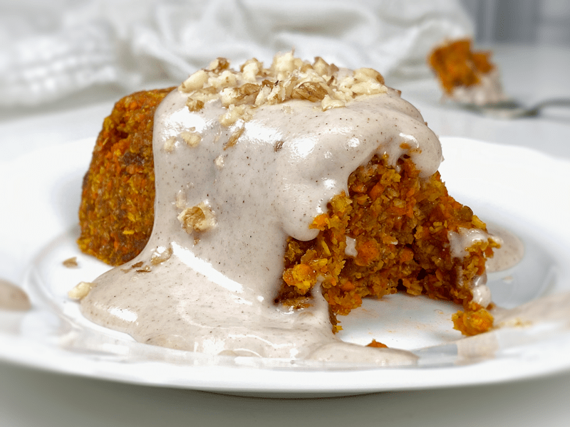
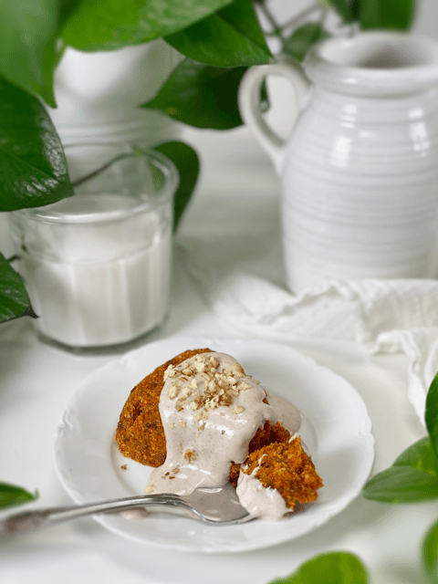

Carrot Apricot Scones | Raw and Cooked Version
I am in love with these gluten-free, vegan Carrot Apricot Scones. There’s something about them that’s so cozy and comforting with all the warm spices, the flecks of carrot, the subtle sweetness of the apricots… perfectly enhanced by my Cinnamon Vanilla Bean Frosting. These scones are not too dense, not too light, full of flavor…and pair beautifully with any type of tea.

Tips for Creating the Perfect Scone
Shaping the Scones
- You can shape the scones by hand or if you happen to have a silicone scone pan you can use that, which is what I did since I already had one on hand.
Dehydration
- The dehydration process is all about timing. If you dehydrate too long, they will become very dry to the palate, and if you don’t dry them enough, they will be like eating doughy batter.
- I suggest dedicating one scone to taste test throughout the drying process, stopping the dry time when they hit perfection.
- Keep in mind that the dry time will vary depending on your machine, climate, humidity, and the size you choose for the scones.
Baked Option
- For those of you who don’t have a dehydrator, you can bake these in the oven.
- The main thing that I was to point out is that they don’t change too much in color when dehydrated or baked so don’t use the coloring as an indicator of doneness.
- I always recommend that when baking a recipe for the first time to keep a close eye on them so they don’t burn. Ovens often run at different temps even though the dial may read a set temperature.

Let’s Talk About a Few of the Ingredients
Carrots
- This may seem pretty straightforward, but it is vital to taste the carrots you plan to use, before shredding them. As I mentioned above, when working with fresh ingredients you will want to create a habit of taste testing. Check out a post I wrote up regarding this by clicking (here)
- Always scrub and peel the carrots before shredding them, so the peel doesn’t impart a bitter taste.
Irish Moss Paste or Psyllium Husks
- Irish moss paste is something I often use in raw vegan bread-like recipes. It adds a wonderful texture, along with moisture, to a recipe. You need to make it in advance, so be sure to add that into your “baking” schedule.
- Psyllium husks can be used in place of Irish moss; they will add a spongy texture to the scones.
Coconut Flour
- In this recipe do not use commercially processed coconut flour, because it is very absorbent, which will result in a very dry scone.
- It is best to make your own by grinding down dried desiccated coconut.
Other than that… this recipe is pretty darn easy and downright delicious. I have set you up for success, and I can’t wait for you to try the recipe. Many blessings, amie sue

Ingredients:
Yields 8 (1/2 cup measurement each)
- 4 cups (400 g) shredded carrots
- 1/2 cup Irish moss paste or 2 Tbsp psyllium powder
- 1 cup finely dried coconut flakes
- 1 cup dried, diced apricots, rehydrated
- 3/4 cup raw coconut flour
- 4-6 Tbsp soak water from apricots
- 1/4 cup maple syrup
- 2 Tbsp cold-pressed coconut oil, melted
- 1 Tbsp ground Ceylon cinnamon
- 1 tsp pumpkin spice
- 1 tsp vanilla extract
- 1/2 tsp Himalayan pink salt
Preparation:
- In the food processor, fitted with the “S” blade, combine the shredded carrots, Irish moss or psyllium, coconut flakes, apricots, coconut flour, soak water, sweetener, coconut oil, cinnamon, pumpkin spice, vanilla, and salt. Process until it turns into a sticky batter.
- Start with 4 Tbsp of the soak water and add more if needed. The moisture content in the dried fruits and carrots may vary each time you make these.
- Measure out 1/2 cup of the batter and place on a non-stick teflex sheet; using your hands, mold into a scone shape.
- I used a pan similar to this one, click (here). It’s called a Cavity Cake Mold. It’s not required by any means, but it sure made the job nice and easy.
- Once formed, transfer each scone to the mesh sheet that sits on the dehydrator tray.
- If you use the mold, flip it over onto the mesh sheet, and they will pop out.
Dehydration Option
- Dehydrate at 145 degrees (F) for 1 hour, then reduce to 115 degrees (F) and continue drying for about 2+ hours.
- There should be a slight crust on the outside but moist on the inside.
- Be sure to dish up when warm, and don’t forget a hefty slathering of some Cinnamon Vanilla Bean Frosting.
- Store leftovers in an airtight container in the fridge for about 5 days. You can freeze these as well for about 1 month.
Baked Option
- Preheat the oven to 450 degrees (F). If hand-shaping, place them on a non-greased parchment-lined baking sheet. If using a silicone pan, there is no need to oil it.
- Bake for 15-17 minutes. Keep an eye on them when baking them for the first time since ovens can run hotter or cooler than others. The color of the scone won’t change too much.
Culinary Explanations:
- Why do I start the dehydrator at 145 degrees (F)? Click (here) to learn the reason behind this.
- When working with fresh ingredients, it is essential to taste test as you build a recipe. Learn why (here).
- Don’t own a dehydrator? Learn how to use your oven (here). I do, however honestly believe that a dehydrator is a worthwhile investment. Click (here) to learn what I use.
© AmieSue.com